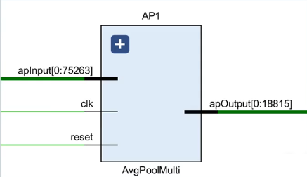

1 方案设计
1.1 加速指标
对于神经网络加速器来说，需要考虑的主要指标有：
- 并行度：与计算速度和资源占用成正比；
- 计算速度：与并行度和资源占用成正比；
- 资源占用：与并行度和计算速度成正比；
目标：最大化计算速度，最小化资源占用。
1.2 加速模拟
加速器验证思路：
- 使用
Python/C++编写模块相同功能函数； - 为硬件模块与软件函数搭建对应
testbench，记录模拟结果； - 对比两者输出数据是否一致（随机抽样验证）；
- 若发现错误，修改模块，并重新验证。
1.3 关键算子
- 浮点：
addf16,mulf16 - 矩阵：
mulmat - 层：
softmax,laternorm
1.4 加速方案
- 查表法：查表法是一种常用的加速算法，它通过提前计算并存储某些数据或结果，然后在需要时直接查表获取结果，从而避免重复计算。这种方法通常用于需要频繁进行某些固定计算的场景，可以显著提高计算效率。
- cordic：CORDIC（Coordinate Rotation Digital Computer）算法是一种用于计算三角函数、对数和其他数学函数的快速算法。它通过迭代地进行坐标旋转和移位运算来逼近目标函数值，是一种高效且精确的计算方法。CORDIC算法在数字信号处理、通信系统等领域广泛应用，并且在硬件实现上具有很高的效率。
1.5 加速器分类
- 单PE加速器（Single Processing Engine）：脉动阵列处理每一层网络，使用共享资源对不同层加速，兼容性强，延迟性大。重叠模式（Overlap Pattern）。
- 流式加速器（Steam Architecture）：流式处理，使用不同资源对不同层独立加速，兼容性弱，延迟性小。流模式（Stream Pattern）

对于重叠模式下的架构：这些PE算子可跨层复用，但使用了片外DDR，由PS与PL通信控制，计算延迟受限于通信带宽。
其他加速器：
- 向量处理器（Vector Processor）：卷积向量算子硬件化（平方、除法、乘积），本质是单PE。
- 神经突触处理器（Neurosynaptic Processor）：针对CNN处理器，存算一体，网络映射难度较大。
1.6 PS & PL
- 交互：
gp,hp,ready-valid - 数据：
reg_ctrl,dma

1.7 浮点量化
半精度浮点数float16：常用于实现加速器中的浮点数运算。其结构：
- 符号S：1 bit
- 指数E：5 bit
- 尾数M：10 bit
|S| E | M |
16| |14 10|9 0|
FP16 = (-1)^S * 1.M * 2^(E - 15)
Range: [5.96*10^-8, 6.55*10^4]
1.7 整型量化
1.8 低功耗设计
待定
2 模块加速
2.1 Conv模块加速
对卷积层进行模块分解：
- 顶层：
ConvLayer卷积层模块 - 激活函数：
Tanh激活函数、Softmax激活函数 - 池化层：
AvgPool平均池化层 - 算子：
- 浮点：
mulf16半精度浮点乘、addf16半精度浮点加
2.1.1 Convolution Layer
一个卷积层有多个卷积核（Filter），image输入到不同的核得到不同的特征（Feature），自顶向下先观察Multi Filter Layer，其输入图像和六个卷积核，输出卷积结果。
网络ConvLayerMulti层输入矩阵规模：image 32*32, filterSet 5*5

模块ConvLayerMulti层输入：
image: 1 * 32 * 32 * 16 = 16384
filters: 6 * 5 * 5 * 16 = 2400
outputConv: 1 * 28 * 28 * 16 = 12544
^ channel ^ scale ^ bitwidth

对于单个卷积核（Filter），再观察Single Filter Layer，其输入图像和单个卷积核，输出特征图（Feature Map）。

模块ConvLayerSingle层输入：
image: 1 * 32 * 32 * 16 = 16384
filters: 1 * 5 * 5 * 16 = 400
outputConv: 1 * 28 * 28 * 16 = 12544
^ channel ^ scale ^ bitwidth

2.1.2 Convolution Unit
一个卷积核（Filter）与一个输入图像（Image）进行卷积运算，得到特征图（Feature Map），这个过程通过ConvUnit模块实现。

CU模块循环使用PE模块实现一个窗口的卷积操作，并输出一个半精度浮点型（FP16）计算结果。PE牺牲了速度换面积。
2.1.3 Processing Element
卷积进行的具体操作是点乘，这里本质上是浮点算子：mulf16乘、addf16加，这里通过PE模块实现。

元素处理（PE）模块：执行具体卷积操作，即权重与数据相乘后累加。添加result_reg，将电路从组合逻辑转化为时序逻辑，保证数据同步。

元素处理（PE）模块代码演示：
module PE(
clk, rst,
fA, fB, res
);
parameter DATA_WIDTH = 16; // 数据位宽
input clk, rst;
input [DATA_WIDTH-1:0] fA, fB;
output reg [DATA_WIDTH-1:0] res;
wire [DATA_WIDTH-1:0] mul_res;
wire [DATA_WIDTH-1:0] add_res;
// 1. 计算乘法结果
mulf16 FMUL(.fA(fA), .fB(fB), .res(mul_res));
// 2. 计算累加结果
addf16 FADD(.fA(fA), .fB(fB), .res(add_res));
always @(posedge clk or posedge rst) begin
if(rst == 1'b1) begin
res <= 0;
end else begin
res <= add_res;
end
end
endmodule
2.1.4 Softmax Layer
Softmax函数将输入归一化，求得各个类概率。输入规模与输出规模相同（400）。
计算过程（时序逻辑）：
- 指数计算：将多个输入分别送到各自的
exponet求指数， - 计算指数和：加法器累加
- 求指数和倒数：使用
FloatReciprocal计算 - 得到每个元素softmax值：乘法器计算
2.1.5 Exponent
指数模块exponent，求解$e^x$值，输入规模与输出规模相同（32），使用泰勒展开拟合：
$$ e^x = 1 + x + \frac{x^2}{2!} + \frac{x^3}{3!} + \frac{x^4}{4!} + \cdots $$
- 两个乘法器：分子 & 分母。
- 一个加法器：累加。
2.2 Pool模块加速
对平均池化层分解：
- 顶层：
AvgPoolMulti（通道平均池化） - 中间层：
AvgPoolSingle（单通道平均池化） - 底层：
AvgU（平均池化单元）
2.2.1 Average Pool Layer
多通道平均池化层（Average Pool Multi）并行度为1，循环使用AvgPoolSingle完成所有通道的平均池化。(时序逻辑电路)

单通道平均池化（Average Pool Single）：全并行度，每个窗口都有一个AvgU运算模块。（组合逻辑电路）

2.2.2 Averaging Unit
平均池化单元（AvgU）：每个通道的平均池化操作：求输入的四个数（位宽16 * 4）的均值，先求和，再乘以0.25得到均值（位宽16）。（组合逻辑电路）
- 三个加法器：numAdd = numA + numB + numC + numD
- 一个乘法器：numAvg = 0.25 * numAdd
优化：插入寄存器形成pipline。
2.2 FC模块加速
对全连接层分解：
- 顶层：
FCMulti（通道全连接） - 中间层：
FCSingle（单通道全连接），激活函数为Tanh - 底层：
PE计算模块
2.2.1 FC Layer
全连接层（Full Connection Layer）：进行线性计算，矩阵向量乘，向量和。
$$ y = xW^T + b $$
注意：多层之间加上
Tanh非线性激活函数。
2.2.2 PE
PE是一个乘法器和加法器实现，实现累乘和累加。
3 项目概览
3.1 项目目录
参考如下CNN加速器目录：
.
├── vivado_project # 项目完整网络的vivado工程
├── conv_code # 不同并行度的卷积模块代码
├── final_code # 各模块以及网络顶层代码
│ ├── Part1. Convolution
│ ├── Part2. TanH Activation
│ ├── Part3. Softmax Activation
│ ├── Part4. Average Pooling
│ ├── Part5. Intergration
│ └── ...
├── test_scripts # 各个模块验证脚本
│ ├── Test1. ANN Test
│ ├── Test2. TanH Test
│ ├── Test3. Text Files Test
│ ├── Average Pooling Python Code
│ ├── Convolution Python Code
│ ├── Softmax Python Code
│ └── ...
├── results # 仿真截图，综合报告，验证数据表格
├── weights # 卷积与全连接层权重和偏置数据
├── hw_design.pdf # 项目硬件设计文档
└── README.md # 项目介绍